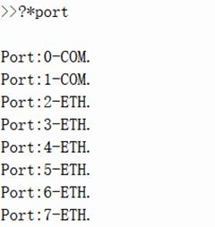
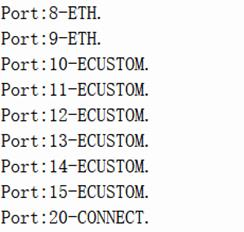

|
通讯指令 | |
|
描述 |
控制器间网口通讯，也可作为MODBUS_TCP主端通讯。 ?*PORT可以显示出当前可用的网络链接通道。  
作为MODBUS_TCP主端时： 选择一个ETH模式的PORT口作为MODBUS_TCP链接通道(不建议用第一个和最后一个)。 当选择的通道已经作为从端被占用时, 控制器自动选择一个没有占用的ETH模式的PORT口作为MODBUS_TCP主端链接。
作为控制器互联使用时： 选择CONNECT模式的PORT口作为控制器互联通道。
注意：主站不要在同一时刻读写多个MODBUS从站，特别是多任务的情况下，注意错开操作。 |
|
语法 |
MODBUSM_DES2 (id,port,"desipaddress",[timer],[resendset], [destport502]) id：对方控制器的MODBUS从端ID，缺省1 port：支持两种模式，?*PORT确认通道号及模式 ETH时，作为MODBUS_TCP主端通道 CONNECT时，做为控制器互联通道 desipaddress：字符串， 对方控制器的IP地址 timer：消息超时时间设置，缺省1000ms resendset：超时消息重发设置，0-不重发，1-SEND指令超时重发，2-SEND与MODBUSM指令都超时重发 destport502：从站端口号，缺省502
MODBUSM指令超时重发要注意，从控制器可能收到2次消息，对寄存器的扫描也可能出现2次。 SEND指令超时重发对从控制器没有影响，重要标志性变量可以通过SEND指令来修改。 |
|
适用控制器 |
4系列产品, 20170117及以上固件版本支持 |
|
例子 |
例一 MODBUS主端通讯连接建立 MODBUS_TCP主端通讯不用考虑丢包。 MODBUSM_DES2(1,4,"192.168.0.12") '按站号和IP与从端通讯使用控制器通道4，?*port确认 WHILE 1 LASTTICK=TICKS FOR i =0 TO 9999 MODBUS_REG(0) = i MODBUSM_REGSET(0,10,0) '设置对端寄存器 MODBUS_REG(0) = 99 MODBUSM_REGGET(0,10,0) '读取对端寄存器
IF MODBUS_REG(0) <> I THEN ?"REG(0)=" MODBUS_REG(0),"STATE=" MODBUSM_STATE '打印在第几次通讯时错误 ENDIF NEXT ?LASTTICK-TICKS '打印通讯时间 WEND END
例二 控制器间通讯连接建立 网络环境不好时，互连通讯有很小的丢包可能。 MODBUSM_DES2($fe,20,"192.168.0.25" ,10) '控制器从端站号为fe，控制器主端通道号为20，?*port确认设置10ms超时时间 MODBUSM_REGSET(0,10,0) '本地寄存器复制到对端 WAIT UNTIL MODBUSM_STATE <> 1 '等待消息结束 IF MODBUSM_STATE<>0 THEN MODBUSM_REGSET(0,10,0) '出错重发一次 MODBUSM_REGGET(20,10,20) '对端寄存器复制到本地 ENDIF WAIT UNTIL MODBUSM_STATE <> 1 '等待消息结束 IF MODBUSM_STATE<>0 THEN MODBUSM_REGGET(20,10,20) '出错重发一次 ENDIF END |
|
相关指令 |